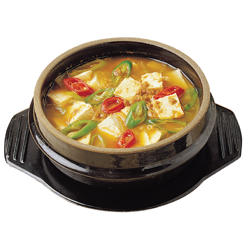

된장찌개
재료:된장(국내산), 두부(국내산), 애호박(국내산), 감자(국내산), 대파(국내산), 차돌박이(국내산) ,팽이버섯(국내산), 조개(국내산)
된장찌개의 효능
된장은 발효식품으로 유산균과 효소가 풍부하여 소화를 돕고, 장 건강을 개선하는 데 도움이 됩니다. 장내 유익균을 증가시켜 배변 활동을 원활하게 합니다. 된장에 함유된 이소플라본, 사포닌 등의 항산화 물질은 체내 면역력을 강화합니다. 발효 과정에서 생성된 유익균과 비타민이 감염 예방에 기여합니다. 된장에는 페놀 화합물과 사포닌이 풍부해 항암 효과가 있다고 알려져 있습니다.